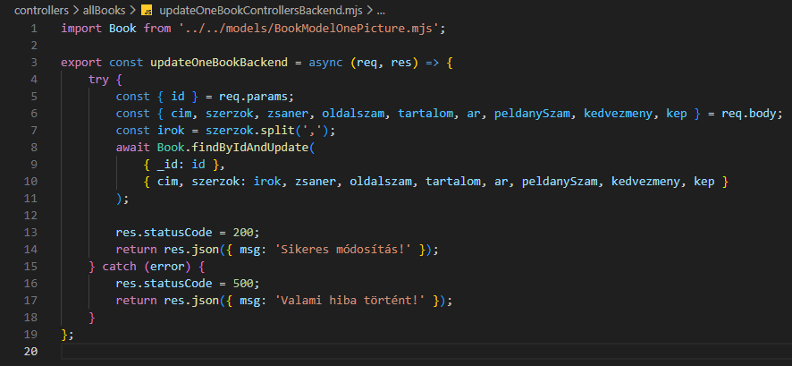

Egy könyv kezelése - updateOneBookControllersBackend.mjs
Egy könyv kezelése - updateOneBookControllersBackend.mjs

Ebben a részben szerkesztjük a controllers/allbooks mappában a updateOneBookControllersBackend.mjs állományt, amelyben kidolgozzuk a CRUD Update művelethez tartozó logikát. Ez megfelel a http PUT metódus-hoz tartozó logikának.
-
Szerkesszük a
updateOneBookControllersBackend.mjsállományunkat.-
import Book from '../../models/BookModelOnePicture.mjs';- aBookmodell alapértelmezett beimportálása. -
export const updateOneBookBackend = async (req, res) => {...};- hozzuk létre és vigyük ki nevesítve ahttp PUT metódus-hoz tartozó logikát (UpdateaCRUDműveletekből). -
try {... res.statusCode = 200; return res.json({ msg: 'Sikeres módosítás!' }); }- a sikeres ág a 200-ashttp hibakód-dal. Abook-t, szerzőket, zsánereket és kedvezményeket átadjuk amodositott_book/modositott_book.ejsállománynak. -
const { id } = req.params;- szedjük ki azidtulajdonságot areq.params-ból. -
const {...} = req.body;- szedjük ki a tulajdonságokat areq.body-ból. -
const irok = szerzok.split(',');- aszerzo-ket szedjem szét egy tömbbe. -
await Book.findByIdAndUpdate({ _id: id }, {...})- frissítsük az adott könyvet a kapott értékekkel. -
catch (error) { res.statusCode = 500; return res.json({ msg: 'Valami hiba történt!' }); }- a sikertelen ág a 500-ashttp hibakód-dal.
-